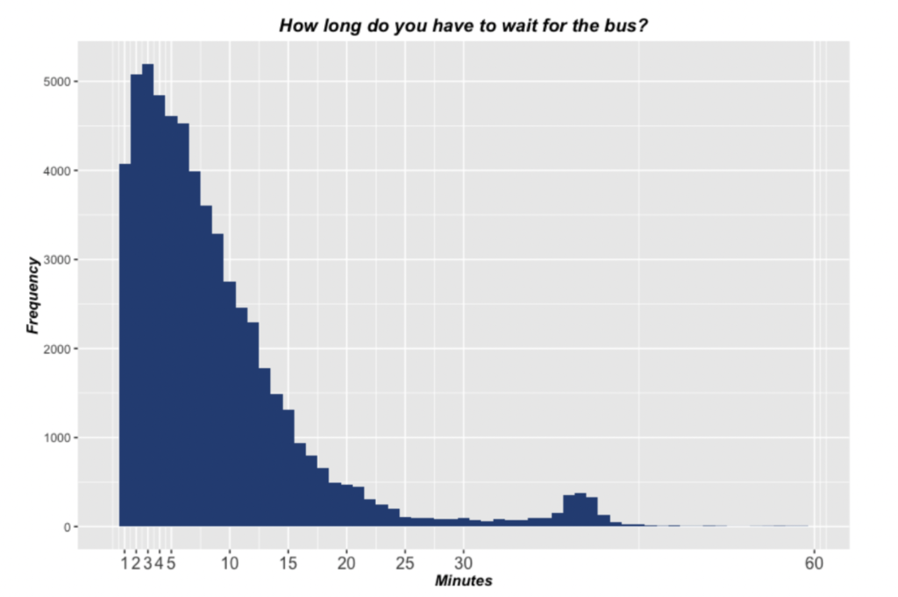

Previous: Chapter 7 - Principles of Data Visualization
# This chapter uses the package ggformula, which takes a few minutes to download on Google Colab.
# Run this first so it's ready by the time you need it
install.packages("ggformula")
library(ggformula)
Installing package into ‘/Library/Frameworks/R.framework/Versions/4.2-arm64’
(as ‘lib’ is unspecified)
The downloaded binary packages are in
/var/folders/mg/1wy1xcls587_h0tqnj42l5740000gn/T//Rtmpr0Z1s1/downloaded_packages
Loading required package: ggplot2
Loading required package: ggstance
Attaching package: ‘ggstance’
The following objects are masked from ‘package:ggplot2’:
geom_errorbarh, GeomErrorbarh
Loading required package: scales
Loading required package: ggridges
New to ggformula? Try the tutorials:
learnr::run_tutorial("introduction", package = "ggformula")
learnr::run_tutorial("refining", package = "ggformula")
Chapter 8 - The Data Generation Process#
We can learn a lot by examining distributions and summaries of a dataset. We can describe the current state of some situation for a clearer picture about reality around us. But in data analysis, our interest usually goes beyond these data alone. We are generally looking at data because we trying to find insights into the broader population it came from. What will a new data point look like? What will the future look like, so we are prepared for it? This is the goal of using statistics for prediction.
We may also want to find out why our data are they way they are; to infer the ways in which the world works. What made the data come out this way? As we discussed earlier, statistics alone can’t determine cause and effect, but it can give us important clues about the mechanisms of the human mind and society.
This is when we now move from descriptive statistics (describing features of a dataset) to inferential statistics (using that dataset to understand the population it came from). We are going to switch from asking questions like “what do the data look like,” to trying to understand what could have produced the specific pattern of variation we see in our data. In this chapter, let’s explore various reasons why a dataset may end up looking the way it does, given a particular population. This will help us build intuitions for later when we try to infer the population when all we have is a sample of data.
Data Generation Process#
This neblous force we’re trying to now identify, the “why” of our data, is called the Data Generation Process.
Let’s start thinking about the data generation process with an example. The histogram below shows a distribution of 60,000 waiting times at a bus stop on the corner of Fifth Avenue and 97th Street in New York City (source).
What does this histogram tell you about waiting times for the bus? Why do you think the distribution has the shape that it does? What process or processes could account for the shape?
Answering questions like this one requires going far beyond just the information in the histogram. You need to imagine yourself waiting at a bus stop, and think about why you got there when you did. You need to bring to bear your knowledge about bus systems and how they work. What causes a bus to arrive when it does?
From the histogram you can see that most people wait just a short time for the bus, while some people end up waiting longer times. This makes sense. Buses have schedules, and because many of the passengers are regulars, they roughly know when the bus will come and try to get to the bus stop just before it comes.
What do you think accounts for the bump in the distribution off in the right tail? Consider again the passengers that know the bus schedule well. If they just miss the bus, and arrive right after the bus leaves, they will end up waiting the longest, until the next bus comes.
8.2 Deterministic models#
Sometimes in systems we care to understand, the data generation process is really simple. It is so simple, that if we know the values of a few explanatory variables, we can perfectly predict what the outcome variable’s value will be by building an equation. For example, the equation for gravitational force is:
where G is the gravitational constant, m1 is the mass of one body, m2 is the mass of a second body, and r2 is the distance between the centers of mass. This is a really helpful equation, because gravitational force is always related to m1 and m2 in this way, no matter what their values are. Armed with this equation, we don’t need to go collect data about the gravity on Jupiter ourselves, because so long as we know its mass, we can calculate the gravitational force it will exert on something.
This equation is also called a deterministic model. It is a model that describes how variables are related to each other in the data generation process of gravity, and it is deterministic because knowing the inputs allows us to always be right about the outputs.
8.3 Probability models#
Other times, even if we aren’t able to create a perfect model of a data generation process, we at least know all the outcomes that are possible under it. For example, when someone flips a coin, it is very hard to compute what face the coin will land on for this particular flip - that depends in some way on how forcefully and in what direction it was flicked with the thumb, but we’re not sure of the exact relationship or if any other variables matter (like wind speed). However, we do know two things: 1) there are only two possible options (heads and tails), and 2) both options have an equal likelihood of happening. With these facts, even if we aren’t able to determine what the outcome of one flip will be, we can pretty accurately say what the distribution of values are for all possible flips.
Making a model of this process is called a probability model. The value of any one outcome variable is random, but the population (the distribution of all possible outcomes) is known. For the case of flipping a coin, we would write the equation for this model as:
You can read this model as saying “the probability of heads is 0.5”.
To say the difference between a deterministic and probability model simply:
in a deterministic model we know all the inputs and their relationships, so we can compute any output perfectly
in a probability model we don’t know the inputs but we know all the possible outputs, so we can compute the probability for another output.
Deterministic models are frequently found in math, physics, and chemistry where the data generation process is relatively simple (even if the equation in the model seems complicated!). In more complex sciences like biology, psychology, or social sciences, we unfortunately almost never get to work with deterministic models. The data generation process of systems in these fields are just too complex, the number of variables too numerous, for us to take account of them all (so far).
In fact, most of the time we don’t even know all the possible outputs for making a good probability model. In those cases, we try to build what’s called a statistical model. We’ll cover that process in the next chapter. For now, knowing about probability models is helpful for eventually building statistical models, so for the rest of this chapter we want you to practice working with probabilities.
Probability vocab#
Before we move on, we need to all be on the same page in the way we talk about probabilities. So here are some definitions.
While a population is the distribution of all values that can be generated by the data generation process, the sample space is the set of possible unique outcomes. We represent these by listing them. For a coin flip, the population could be an infinitely long list of heads, tails, heads, heads, tails… etc., but the sample space is
{heads, tails}. For a six-sided die, the sample space is each of the possible numbers that can appear:{1,2,3,4,5,6}. For a continuous variable like the amount of time it takes to get to work, the sample space is all possible real numbers greater than zero (since it can’t take a negative amount of time to get somewhere, at least not yet). We don’t want to try to write out all of those numbers within the brackets, so we would denote a continuous space of possibilities as {0 ≤ y ≤ ∞}.An elementary event is one outcome or one datapoint drawn from the sample space. For example, this could be obtaining heads in a single coin flip, rolling a 4 on a throw of the die, or taking 21 minutes to get to work one day.
A complex event refers to multiple events in combination. E.g., the probability of rolling a 2 and a 2 at the same time on two different dice. In other words, this is the a set of multiple elementary events.
Probability axioms#
Now that we have those definitions, we can outline the formal mathematical features of a probability, also known as axioms. These are the features that a value has to have if it is going to be a probability, under our definition of one. Let’s say that we have a sample space defined by N possible events, {E1, E2, E3, … EN}, and X is a random variable denoting which of the events has occurred, where P(X = Ei) is the probability of X equaling the i’th kind of possible event. Under this idea:
Probability cannot be negative: P(X = Ei) => 0
The total probability of all outcomes in the sample space is 1; that is, if we take the probability of each Ei and add them up, they must sum to 1. We can express this using the summation symbol:
This is interpreted as saying “Take all of the N elementary events, which we have labeled from 1 to N, and add up their probabilities. These must sum to one.” Another way of saying this, which will come in handy later in the course, is that the probability of NOT Ei is 1-P(X = Ei).
The probability of any individual event cannot be greater than one: P(X = Ei) <= 1. This is implied by the previous point; since they must sum to one, and they can’t be negative, then any particular probability cannot exceed one.
8.4 Simulating data with probabilities#
In a situation where we know all the possible outcomes for some data generation process, it can be helpful to plot the distribution of all those outcomes in order to compute the probability of any individual one. For instance, let’s say we have a fair six-sided die. We know two things about this data generation process: 1) the sample space has six options, {1,2,3,4,5,6}; and 2) there is an equal probability of rolling any of those options for one elementary event (which means each probability is 1 / 6 possible events = 0.167). Put another way, the proportion of the population of data that falls into bins for each of the numbers is the same. We can plot this for every possible outcome of the die (on the x-axis), and the proportion of rolls of that outcome in the data population (on the y-axis).
This looks a lot like a histogram when plotted this way, doesn’t it? In fact, the above picture was generated using gf_dhistogram(), just with the y-axis label changed from “density” to “probability.” This reveals an inherent truth about probabilities - the proportions of values in any population of data generated (the “density” in a density histogram) will match the expected probability of getting that value for the next event.
Thus, even if we don’t have a set of data to start with, when we know what the probability model is, we know what the distribution of all possible data is. From this, we can generate or simulate new data. This is what people do when they do simulation research - they assume an underlying probability model, and generate a bunch of new data to see what reality would look like given that sort of model.
With computers, it is very easy to start simulating your own data samples from a probability model. All you need to know is the sample space and the associated probabilities for each possible outcome. In R, we can use the sample() function, which pulls a sample out of a probability distribution. Let’s simulate 1,000,000 die rolls (something really tedious to do in real life!) and see what happens.
#possible values of the die
sample_space <- c(1,2,3,4,5,6)
#probabilities of each value
probs <- c(0.167,0.167,0.167,0.167,0.167,0.167)
#sample() takes a sample space vector, sample size, replace flag, and probability vector
outcomes <- sample(x = sample_space, size = 1000000, replace = TRUE, prob = probs)
#put the outcomes into a dataframe for plotting
outcome_df <- data.frame(outcomes)
#plot all the die rolls
gf_dhistogram(~ outcomes, data = outcome_df, color= "gray", fill = "blue", bins = 6)
The sample() function in base R is a general sampling function that lets you define any sample space and any corresponding probabilities. It takes four arguments: 1) a vector ‘x’ representing the sample space; 2) how many values from that sample space you want to generate; 3) a flag to signal if you want to sample with replacement or not (i.e., once you roll a 6, is it still possible to roll another 6? If yes, replace = TRUE); and 4) a vector of the probabilities of each possible outcome (must be the same length as the sample space vector x).
Examine the graph you made above. It should look like a rectangle, with roughly equal numbers of rolls in each possible die value.
Next try the code below. Notice that the last argument, prob has been left out. What happens?
#sample() function, but no prob argument
outcomes <- sample(x = sample_space, size = 1000000, replace = TRUE)
#put the outcomes into a dataframe for plotting
outcome_df <- data.frame(outcomes)
#plot all the die rolls
gf_dhistogram(~ outcomes, data = outcome_df, color = "gray", fill = "blue", bins = 6)
Does it look pretty much the same? Why didn’t the function show an error?
This is because some functions have what’s called “default arguments,” where if you don’t specify something (like for prob), the underlying source code will default to a particular value. In this case, sample() has a default value of prob being all values have the same probability. When functions get complex like this, it’s good to write down how it works in your R cheatsheet, or google for the documentation of the function. Here is the documentation for sample().
Now, it’s your turn to finish the code below and generate a new sample of die rolls into the object outcomes. However, this time you should use a smaller size amount, like 30. What does the distribution look like now?
#finish the sample() command below
outcomes <- sample(#your code here, with a sample size of 30)
#put the outcomes into a dataframe for plotting
outcome_df <- data.frame(outcomes)
#plot all the die rolls
gf_dhistogram(~ outcomes, data = outcome_df, color = "gray", fill = "blue", bins = 6)
Does it still look like a rectangle? Why do you think not?
The answer to this question comes from the law of large numbers, which shows that, even when you know the underlying probability model (since we defined the probabilities of all die rolls to be the same), there’s still randomness at play. With a small sample size, this randomness can mean some possible rolls are more numerous than others. But the bigger your sample size, the less this randomness matters - eventually the proportions of the die values will equal their expected proportions.
A demonstration of the law of large numbers. A coin was flipped 30,000 times, and after each flip the proportion of heads was computed based on the number of heads and tail collected up to that point. It takes about 15,000 flips for the proportion to settle at the true probability of 0.5.
Now, try rerunning your code above a few times without making any changes to it. Do you notice your histogram changing? Processes like sampling rely on randomness, so each time you run the sample() function it will produce a different sample. When samples are small, the distribution of them can look very different. If you want to be able to have a random output be the same each time you run some code, put the command set.seed() on a line before it, with a number of your choosing as the argument. Each different number will operate as a separate “seed” from which your random outcome deterministically “grows.” Every sample generated from the same seed will produce the same sample and same distribution, and every sample generated from a different seed will look different.
# Set a seed before this sample function. Then run this code multiple times to verify that
# the sample is always the same.
outcomes <- sample(x = sample_space, size = 30, replace = TRUE)
#put the outcomes into a dataframe for plotting
outcome_df <- data.frame(outcomes)
#plot all the die rolls
gf_dhistogram(~ outcomes, data = outcome_df, color = "gray", fill = "blue", bins = 6)
Simulating data by picking samples from a known population is ultimately a simple approach, but it can do some powerful things for us. For one, we don’t have to work with only populations where every outcome has the same chance of happening. Instead of a fair die, let’s now imagine we have an unfair die that is weighted so that the probability of rolling an odd number is twice as likely as rolling an even number. We now change the probs argument to be {0.22, 0.11, 0.22, 0.11, 0.22, 0.11}.
sample_space <- c(1,2,3,4,5,6)
weighted_outcomes <- sample(x = sample_space, size = 30, replace = TRUE,
prob = c(0.22, 0.11, 0.22, 0.11, 0.22, 0.11))
outcome_df <- data.frame(weighted_outcomes)
#plot all the die rolls
gf_dhistogram(~ weighted_outcomes, data = outcome_df, color = "gray", fill = "blue", bins = 6)
#count number of rolls of each number in a table
table(weighted_outcomes)
Can you see the difference in probabilities in your sample histogram and outcome table? If you were trying to cheat with your die, how many rolls do you think you could get away with before other people started noticing the weighting? Play around with the sample size to see how much the shape can vary sample to sample.
So far we’ve only talked about elementary events (the probability of getting one outcome from the population). We can also use simulation to help us find the probability of complex events. Let’s say that now you’re the Dungeon Master of a game of Dungeons and Dragons. Your players will win their fight if they roll a “critical roll” of 6 on a 6-sided die, but they have two shots to do it (they can roll two dice). What is the probability they roll a 6 on either of the two die?
Before moving on, think programatically for a moment about each step your code would need to do to calculate this.
(Seriously, stop and try to find a solution before reading the next paragraph!)
One answer is that we can use a three-step process: 1) simulate two different samples of rolls (for two different dice), then 2) compute a new variable that checks whether there is a 6 in the ith roll of any sample, then lastly 3) make a distribution of that new variable. Here’s the code for that process.
sample_space <- c(1,2,3,4,5,6)
#roll 1 die 1,000,000 times
die1 <- sample(x = sample_space, size = 1000000, replace = TRUE)
#repeat for the other die
die2 <- sample(x = sample_space, size = 1000000, replace = TRUE)
#make a boolean variable for whether die1 or die2 has a 6, at each index
any6 <- (die1 == 6) | (die2 == 6)
#count number of "true" results for rolling at least one 6
sum(any6)
#compute probability (proportion of total complex event sample that is true)
sum(any6) / length(any6)
A 16.7% of rolling a 6 on one die might seem like unlikely odds to win a fight, but with two chances at the 6 that probability goes up to ~30.5%. Not as bad!
As with many things in statistics and coding more generally, there isn’t always just one correct way to do something. That is true here as well. Maybe you thought of a different way to simulate this data. Here is another approach:
sample_space <- c(1,2,3,4,5,6) #sample space
any6_sum <- 0 #a counter object
for (i in 1:1000000) { #making a for loop of 1,000,000 tosses of two dice
twodice <- sample(x = sample_space, size = 2, replace = TRUE) #sample two dice at once
if (6 %in% twodice) { #if there is at least one 6 in this two-dice sample,
any6_sum <- any6_sum + 1 #increase the counter object by 1
}
}
#count number of times there was at least 1 six in two-dice samples, across 1,000,000 tosses
sum(any6_sum)
#compute probability (proportion of times we found a 6 out of tosses we made)
sum(any6_sum) / 1000000
Did that come out as approximately the same value as the first simulation approach?
Technically this way is a little bit slower for the computer to do (you may have noticed it took about half a second longer to run). It’s not as optimal time wise, since sample() samples two sets of one million datapoints really fast compared to sampling 2 datapoints, one million times. If you get into building simulations a lot, this time optimization can become something really important to you. But ultimately, they both gave us the correct answer.
Another powerful thing simulations can do is help us calculate the probability of how different events combine with each other. Say we’re the Dungeon Master again, and each of our players rolls a die to randomly generate a value for how much power their character has. But, there’s two different types of power - physical power, and magical power. You don’t want to keep track of two different scores for everyone, you’d rather combine them into one score of total power. So you tell your players to roll a die for each type of power, and then add those values together.
If you’re still using a six-sided die, both values of the sub-types of power have an equal probability of being 1, 2, 3, 4, 5, or 6. Is there also an equal probability of having a total power score of 2 through 12? Let’s find out.
sample_space <- c(1,2,3,4,5,6)
#roll 1 die 1,000,000 times
phys_power <- sample(x = sample_space, size = 1000000, replace = TRUE)
#repeat for the other die
mag_power <- sample(x = sample_space, size = 1000000, replace = TRUE)
#make a new total power variable by adding both subtypes together
total_power <- phys_power + mag_power
#make a table of the frequency each total power result across 1,000,000 simulations
table(total_power)
Interesting! Even though the chance of any value on the power subtypes is the same, there are differences in probability among the different possible combination scores. The chance of getting a 7 for a character’s total power is about 6 times as high as getting a 12. Let’s visualize this with a histogram:
#make a dataframe out of the new variable
outcome_df <- data.frame(total_power)
#Use gf_dhistogram to plot the histogram of scores in outcome_df
Does that look like the same shape as the histogram of the outcome population for rolling one die? Keep your answer in mind for the next section.
8.5 Theoretical probability distributions#
As you might imagine, the probability distributions underlying variables in the real world could be a great many shapes. They could look rectangle shaped, like a symmetric bell, skewed one way or another, etc. However, over the years statisticians have figured out that some of these shapes are more common than others. This has led to naming these special shapes and defining the idealized version of them mathematically. These special shapes are called theoretical probability distributions, and we’ll introduce you to working with them now.
Uniform distribution#
First, let’s tackle the example above of a fair six-sided die. There are 6 possible outcomes, {1,2,3,4,5,6}. We know the probabilities of rolling any of these outcomes is the same, or uniform. Since the sum of all possible probabilities is 1 (from axiom 2 above), we therefore know that the probability of rolling any one value is 1/6 = 0.167, or P(X = Ei) = 0.167. Written as a set, that would be {0.167,0.167,0.167,0.167,0.167,0.167}.
We can use simulation to make a large sample to approximate this distribution, as we did above, and we see that it forms what looks mostly like a rectangle. The theoretically ideal version of this is a perfect rectangle, called the uniform distribution.
We can use some different R functions to access this perfectly shaped distribution without simulation: runif() and dunif(). The “unif” part of the function name is obvious - it refers to the uniform distribtion. In the first one, the “r” refers to generating a random sample from the uniform distribution, and in the second one, the “d” refers to calculating the density (or probability) of a particular value.
#sampling from the uniform distribution, between values of 0 and 6
outcomes <- runif(n = 1000000, min = 0, max = 6)
#putting sample into a dataframe
outcome_df <- data.frame(outcomes)
#look at first few values sampled from uniform distribution
head(outcome_df)
#plot the histogram of sample
gf_dhistogram(~ outcomes, data = outcome_df, bins = 500)
The idealized, theoretical shape of the uniform distribution is a smooth line, so we don’t have to only sample integer values from it. Any decimal number has the exact same probability of being drawn as any other. Thus, sampling with runif() generates continuous data, meaning any decimal value between the min and max arguments.
If we wanted to generate ordinal whole number values like on a die, we need to round every generated number up to the nearest ordinal value. R gives a few functions for this: round() (round values to the nearest specified decimal place), ceiling() (round up to the nearest integer), and floor() (round down to the nearest integer). We’ll use ceiling() in our case to round up so all our values are only in {1,2,3,4,5,6}.
outcome_df$rounded_outcomes <- ceiling(outcome_df$outcomes)
head(outcome_df)
gf_dhistogram(~ rounded_outcomes, data = outcome_df, bins = 6)
Where runif() lets us generate a random sample from the uniform distribution, dunif() tells us the probability (density) of a specific value. Try using it to calculate the probability of rolling a 4 on a die, given a uniform probability distribution:
# first argument is the value you want the probabilty of; second and third arguments are the min and max of the
# (continuous) distribution
dunif(4, min=0, max=6)
Normal distribution#
When a set of elementary events have equal probabilities of occuring, their probability distribution matches the theoretical uniform distribution. This is the easiest distribution to understand in terms of the data generation process that creates it.
The normal distribution is another very common distribution in nature, because it arises out of combinations of data (as we simulated with our DnD power scores earlier in the chapter). Many things in life (indeed, probably most things we care about) don’t just happen out of thin air - you aren’t your height just by happenstance. You can think of it as a combination score out of the effect of many other variables, such as your genes, nutrition, any diseases, etc. We might not know the data generation process deterministically, but we know it arises out of some sort of combination process. Thus, there is also a theoretical probability distribution for these sorts of variables.
The shape of the theoretical normal distribution is unimodal and symmetrical - it’s a curve that looks like a bell. But its central tendency and spread can vary. In fact, the normal distribution is actually a family of theoretical distributions, each having a different shape. To specify a particular normal distribution to use, we need to provide two values - the mean and standard deviation. As you will recall from chapter 5, 1 standard deviation means about 68% of the data in a normal distribution is 1 standard deviation above or below the mean, 95% is within 2 standard deviations, etc.
The figure below can give you a sense of how normal distributions can vary from each other, depending on their means and standard deviations. Note that three of the four distributions pictured have the same mean, which is 0, but quite different shapes. The fourth distribution has a mean that is below the other three.
Note that you can’t specify a normal distribution with a min and a max - even if it doesn’t look like it in the picture, technically all values are possible with a normal distribution. The sample space is {-∞ ≤ mean ≤ ∞}.
In R, we’ll use rnorm() and dnorm() for doing the same sorts of commands we did previously with the uniform distribution. For instance, imagine that it takes you, generally, 8 minutes to bike to class from your dorm room. However, any of a great many things could happen to you on the way there - you have to wait for traffic, or maybe your coffee suddenly kicks in. All these events combine to contribute to your overall travel time so that some days you’re really fast, and other days it takes longer. Let’s generate a sample of travel times you might have, using a theoretical distribution of mean 8 and standard deviation 1:
#sampling from the normal distribution
outcomes <- rnorm(n = 1000000, mean = 8, sd = 1)
#putting sample into a dataframe for plotting
outcome_df <- data.frame(outcomes)
#plot all the sampled values
gf_dhistogram(~ outcomes, data = outcome_df)
Now use dnorm() to figure out how likely it is that you get to class earlier than average fast, in 6 minutes:
dnorm(6, mean = 8, sd = 1)
Perhaps there’s more variability to your travel time, so the standard deviation of your distribution is actually 2. Plot a new normal distribution with this new sd of 2, and recalculate the probability of arriving at class in 6 minutes:
# Write your code below
There are other distributions you are likely to encounter if you continue in your statistics journey: Poisson, binomial, gamma, etc. These represent data that come about through a different generation process (e.g., combination with multiplication instead of addition, data that can’t be less than zero, etc.) These are outside the scope of this intro course, because their shape isn’t too different than the normal distribution, so the normal is often a fine approximation. But feel free to look them up and learn about what sort of data generation processes would create them!
8.6 Randomness#
Let’s take a little detour into the notion of randomness. We’ve been assuming we’re talking about the same thing when “drawing a random sample”, or the result of any one coin flip is “random”, but let’s be explicit about the meaning of this now. First we’ll make a distinction between what we might mean by “random” in regular life and what we mean by “random” in statistics.
To start, let’s look at what humans consider “random”. Students were asked to think of a random number between 1 and 20 and enter it into a survey. What would you answer? How did you decide that number counts as random?
Here is a histogram of how ~200 students answered this question:
What do you observe in the histogram above? Does it look the way you would expect it to if the selection of numbers was random?
It seems like there are some spikes around 7, 13, and 17. Very few students chose 1, 2, and 20. If the distribution does not appear to be the result of a random process, what do you think the data generating process might be?
If we made a histogram of 200 random numbers 1-20 generated from a computer, what would the resulting distribution look like? What shape would you expect?
Students have many ideas of randomness including “unpredictable,” “unexpected,” “unlikely,” or “weird.” To the students in this survey, some particular numbers sound more random than others. They seem to think, for example, that 17 and 7 sound more random than 10 or 15.
The mathematical concept of random is different. Whereas we often think that random means unpredictable, random processes (the way statisticians think of them) are things governed by a probability distribution. A probability distribution shows us the probability for every possible event, and thus allows us to estimate the probability of a particular event.
If each of the numbers 1 to 20 had an equal likelihood of being selected, we could model that as a random process, just like we did die rolls. This is a critical feature of random processes. Even though they are very unpredictable in the short run — for example, if we asked you to predict what the next roll would be of a 20-sided die, you would only have a 1 in 20 chance of predicting correctly — they are actually very predictable in the long run.
8.7 Mathematical rules with probability#
After practicing with probability distributions and simulating data samples from them, hopefully you’re developing a sense of how to find the probability of some event under a probability model. As the last section of this chapter, we want to introduce you to more complicated probability events you can calculate. Traditionally in stats and math classes, students are taught about these through mathematical equations (and professors will go to great lengths to make students memorize them). For us, now that you appreciate the shapes of probability distributions and how to simulate events, you won’t have to just memorize these equations - you’ll have a deeper sense for why they are the way they are.
First, here’s a quick recap of the axioms of probabilities we introduced earlier.
Probability cannot be negative
The total probability of all outcomes in the sample space is 1
The probability of any individual event cannot be greater than one
Based on these axioms and some algebra, we can build additional mathematical rules that hold so long as the axioms are true:
Subtraction: If the sum of all probabilities for a sample space is always 1 (axiom #2 above), then the probability of any particular event NOT occurring is equal to the sum of the probabilities of all other possible events, or 1 minus the probability of this event (in R, the
!symbol means “not,” so we’ll use it here too):
To see this visually, consider the following uniform distribution:
The probability of all events not equal to 3 is the area of the distribution (turquoise), minus the area of the bin corresponding to 3 (orange). You can also verify this by using dunif():
prob_3 <- dunif(3, min = 0, max = 6)
prob_not_3 <- dunif(1, min = 0, max = 6) + dunif(2, min = 0, max = 6) +
dunif(4, min = 0, max = 6) + dunif(5, min = 0, max = 6) +
dunif(6, min = 0, max = 6)
# does prob_not_3 have the same value as 1 - prob_3?
prob_not_3
1 - prob_3
Cumulative probability: Say we roll a six-sided die, but we don’t really care about the exact number that comes up. Instead, we care about rolling any of a subset of numbers - e.g., less than or equal to 3 (so 1, or 2, or 3). For this, we add up the probabilities of each specific outcome that would be true under our logical statement:
Visually:
The probability of rolling any number less than or equal to 3 is the sum of the areas of options that satisfy this condition.
We could use dunif() to add up the probabilities of 1-3 to verify this, but there’s also a punif() (and pnorm()) function that makes this faster and returns the cumulative probability of a distribution up to a certain max:
punif(3, # The max (or min) of the cumulative
min = 0, # Lower limit of the distribution
max = 6, # Upper limit of the distribution
lower.tail = TRUE) # If TRUE, calculate cumulative below 3.
# If FALSE, calculate cumulative above 3.
AND events: An AND event (also known as an “intersection” or “joint probability”) is a type of complex event. This is the probability of both outcome 1 AND outcome 2 happening jointly across multiple events. We use a ∩ symbol to denote this. So the probability of getting both a 6 on rolling die 1 AND a 6 on die 2:
Let’s visualize this by making two uniform distributions, and turning one on its side. Then overlap them so we make a sort of matrix. The joint probability of getting two 6s on two different die is the area where the 6 column of each distribution overlaps.
There’s not a quick R function for calculating joint probabilities between two distributions, but we can simulate it:
sample_space <- c(1,2,3,4,5,6)
#roll 1 die 1,000,000 times
die1 <- sample(x = sample_space, size = 1000000, replace = TRUE)
#repeat for the other die
die2 <- sample(x = sample_space, size = 1000000, replace = TRUE)
#make a new boolean variable for whether both dice equal 6 for each index
both6 <- (die1 == 6) & (die2 == 6)
# can count the number of true values in a boolean just by summing,
# since TRUE also equals 1 and FALSE equals 0
# then divide by the number of total rolls
sum(both6) / length(both6)
#verify it's about the same as the axiom P(E6)*P(F6)
(1/6)*(1/6)
OR events: An OR event (also known as a “union”) is another complex event (denoted with the ∪ symbol). This one is the probability of either outcome 1 OR outcome 2 happening across multiple events:
In this rule, we need to remember to subtract the probability of A and B occuring together, because otherwise we’re counting the outcome of A & B twice, since it’s covered both by P(A) and P(B).
Also remember that this is NOT the same thing as the probability that X equals either one of two events. That would be a cumulative probability of one event having a value of one of a subset of outcomes. Unions refer to separate events happening together.
A union event visualized is the area covering both columns that have a 6 somewhere in it:
And we can simulate it, this time using a | logical condition instead of a & condition:
sample_space <- c(1,2,3,4,5,6)
#roll 1 die 1,000,000 times
die1 <- sample(x = sample_space, size = 1000000, replace = TRUE)
#repeat for the other die
die2 <- sample(x = sample_space, size = 1000000, replace = TRUE)
#make a new boolean variable for whether either dice equal 6 for each index
both6 <- (die1 == 6) | (die2 == 6)
# can count the number of true values in a boolean just by summing,
# since TRUE also equals 1 and FALSE equals 0
# then divide by the number of total rolls
sum(both6) / length(both6)
#verify it's about the same as the axiom P(E6) + P(F6) - P(E6)*P(F6)
1/6 + 1/6 - (1/6)*(1/6)
Chapter summary#
After reading this chapter, you should be able to:
Describe the difference between deterministic and probability models
Define a sample space and event in probability
Understand the axioms of probabilities
Describe what a uniform and normal probability distribution look like
Use
sample(),runif(), andrnorm()to simulate data from probability distributionsFind the probability of events using
dunif()anddnorm()For any variable in the real world, think about what data generation process might be behind it